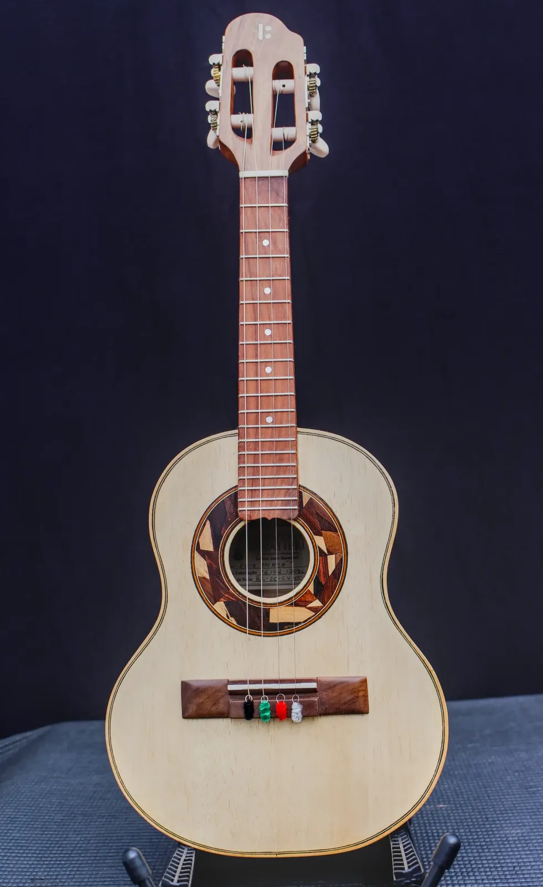

INAJÁ Cavaquinho

Madeiras
- Tampo
- Marupá
- Fundo e laterais
- Imbuia
- Braço
- Cedro
- Escala
- Pau-ferro
- Cavalete
- Pau-ferro
Componentes
- Tarraxas
- Tradicional, corpo metálico reforçado
- Filetes / marchetaria
- Marchetaria em madeira, aplicação manual
- Acabamento
- Goma Laca Indiana
- Nut
- Osso legítimo
- Rastilho
- Osso legítimo
- Headstock
- modelo marca Baratieri
- Preço
- R$ 2.000,00
- Identificação
- BL-26-CV-001
Inajá é uma palmeira nativa brasileira, conhecida pela madeira resistente e pelos frutos que alimentam tanto gente quanto bicho no meio da mata — um símbolo de força tranquila, que dá o tom deste cavaquinho.
A combinação de tampo em marupá com fundo e laterais em imbuia segue a mesma receita que já provou seu valor em outros instrumentos da linha Raiz: resposta rápida e brilhante do marupá, equilibrada pelo grave presente e encorpado da imbuia. O braço em cedro mantém o instrumento leve, e a escala e o cavalete em pau-ferro garantem estabilidade dimensional mesmo com variação de clima — importante pra quem toca em rodas ao ar livre ou viaja com o instrumento.
O destaque desta peça é o headstock modelo marca Baratieri, que assina visualmente o instrumento e reforça sua identidade — um detalhe que virou marca registrada dos instrumentos mais recentes que saem da minha bancada. Os filetes em marchetaria de madeira, montados manualmente, e o acabamento em goma-laca indiana completam um cavaquinho que une tradição, robustez e um visual que já nasce com assinatura.
Feito pra durar, feito pra tocar todo dia — esse é o espírito por trás do Inajá.